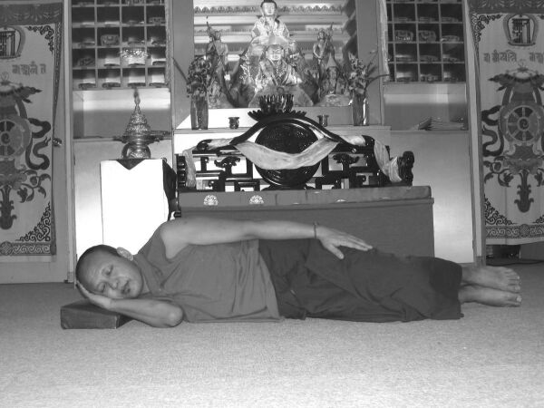
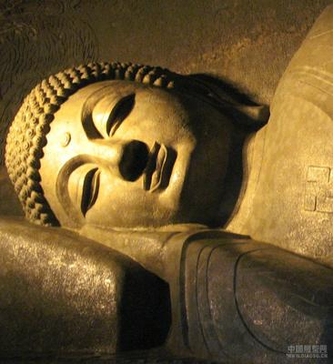

摘自大藏寺 祈竹仁宝哲《生死自在》：
……在好好地回向后，我们仍然保持床头有本尊坐着的观想，然后起立恭敬地在床上向床头的弥陀顶礼三拜，再以吉祥狮子卧的姿势(注：见图)躺下。

掌托肋或卧时置于面前之忱上，向右侧卧成吉祥卧姿。双腿微屈，左掌置于左胯处。
这个睡姿，是佛陀入灭时之姿势。它本身与体内气脉有密切关连，所以对修行很有利益。

在某些寺院中，我们会见到有些佛像是这个姿势的，而人们会称他为「睡佛」，其实这是一种十分不对的称呼。「佛」的意思是「觉醒者」，「睡佛」便就是「睡着了的觉醒者」之意，这是一种有矛盾的称呼!
这种姿势的佛像，事实上是纪念佛陀最终入灭时的姿势。在西藏，由于人们认为佛陀入灭是很悲哀的一回事，所以寺中少见这造型的佛像，唯独是在描绘佛陀一生中的十二件大事之佛画中才会见到。
有许多修行人，也是以这种有利的睡姿入灭的。 在一九五七年，家师萨巴仁宝哲二世便是以这卧姿，入定五天后才圆寂的。
这卧姿并非临终时才用上，平时睡眠时若能采此姿势，亦有十分大的好处。
我们躺下后，头部是向着西方的。如果睡床并非朝西而摆设，我们自己在心中想着是在朝西而卧便可以了。
在观想中，我们想着自己的头靠在弥陀的脚上，在他如慈父般的守护下，我们专注保持此观想，放下一切烦恼、杂念及妄想，直至安然入睡。
如果我们在睡眠时段中乍醒，便要马上检查自己的观想是否已忘失、卧姿是否已改变，如果是的话，我们又重新生起本尊在床头之观想，再调整睡姿再次入睡。
在开始修习时，我们会发现在乍醒时身姿已变动及观想已忘失，这是十分正常的。
我们初时只需要求自己以吉祥卧之姿入睡便可;在睡中乍醒时，再度调整便可以了。在初时，我们亦未能在整段睡眠时间中保持观想，但随着熟习，慢慢便能做得到，不必心急，只要多练习，最后便能做到整夜睡姿不变，而观想亦不失去。
睡眠时应保持什么威仪呢？
结束了一天的闻思修行和修持善法之后，晚上入睡时，应像怙主佛陀4月15日示现涅盘时的吉祥卧一样：右侧下卧，以足压足，右手垫在右脸颊下，左手放在左腿上。以这种卧式入睡，即使突然离开人间，也不会堕入恶趣当中。
莲花生大士在《六中阴》中再三地宣讲：“任何一个众生（不仅是人），临死时若是吉祥卧，就算业力再深重、罪业再大，也不会堕入三恶趣。”这是非常重要的一个教言！
以前上师宣讲中阴法门时，也再再强调：“我们死的时候，吉祥卧是最好的，如果自己实在没有能力，周围的人也应想尽办法帮忙。甚至牦牛、饿狗等动物在奄奄一息时，把它的身体摆成吉祥卧，也不会堕入恶趣。”可见，吉祥卧的功德非常非常大，我们每天在睡觉时，应该记住这个姿势。
吉祥卧有两个好处，一方面不会令睡眠时间空耗，而能充分利用起来，积累不可思议的功德。另一个原因就是，如果我们在酣睡中离开人间，以此卧式也不会堕入三恶趣。所以，以前的一些老修行人，都比较注重用这种卧式睡觉。
但有时候我们睡觉是吉祥卧，第二天早上醒来时，完全成了另一种姿势，这种情况也比较多。不过一年多以来，我每天的吉祥卧都保持得比较好，倒不是自己修行好，而是右边有块地方很痛，一直压着就不痛，所以晚上不能翻身，一翻身就会痛醒，没有天亮之前不能动。我有时候想：“这个病对我还是有点帮助，如果不痛的话，晚上肯定翻过去翻过来，吉祥卧很快就不成形了。”总之，吉祥卧的功德非常大，这不是明白道理就够了，一直要在实际行动中去做。
有关论典中记载，吉祥卧有四种功德（不同论典的说法也不同）：第一，身体不放松，不会因散乱而产生不如法的念头和行为。第二，不失正念，狮子是百兽之王，睡眠中不会失去正念，我们依此卧式而睡，也不会忘失修持善法的正念。第三，不会入于酣睡、深度昏沉，而能时刻保持警觉的状态。第四，不起恶梦，经常做吉祥之梦。释迦牟尼佛能彻知一切万法，他涅盘时在所有行为中选择这种姿势，必定对后学者有极大的利益。
在入睡之前，还有四点需要注意：
一是要具足正念而睡，从开始睡觉一直到睡着之前，始终要处于意念善法当中。以前我在读小学时，住在一个老喇嘛家，我们每天吃完晚饭以后，他就盖上法衣，把灯吹了，一直念“嗡玛呢吧美吽，嗡玛呢吧美吽……”，逐渐逐渐睡着了，声音就没有了。早上醒来时，他的声音先是特别浊，嗡嗡嗡听不清楚，后来慢慢地——“嗡班匝萨埵吽。嗡班匝萨多萨玛雅，玛呢巴拉雅，班匝萨多迪诺巴，迪叉哲卓美巴瓦……”开始念百字明，一直念到吃早饭之前，这种传统从来没有间断过。这些孩童时代的教育，对我一生的影响都很大，尽管自己没有那么精进，但始终都觉得这个很需要、这个很重要，经常在藏族汉族的很多法师面前提倡，发动大家念《随念三宝经》、百字明。然而，自己有时候能力有限，有时候烦恼很重，不能如理如实地行持，所以我非常佩服那些老修行人。
二是要在正知中入眠，尽量不产生一些烦恼。
三是光明想。临睡之前，观想释迦牟尼佛或阿弥陀佛等佛菩萨，发光照亮自己的周围，在这样的境界中入睡。《上师心滴》有阿弥陀佛的专门修法，依靠这种修持，临终时阿弥陀佛会亲自来迎接。即使我们不能做到这样，作为一个修行人，晚上在佛像前磕三个头，这一点最好不要忘，平时出门也应带着佛像或唐卡，这就是我们跟非修行人的不同之处。同时，还应该每天观想一下佛陀，否则自己的行为不一定非常如法。即使你不会背诵、不会修法，但在面前放上释迦牟尼佛、阿弥陀佛或上师如意宝的像，然后看一看观一观，好好地忏悔、好好地念经，这也是一种修行。这种修行谁都会做，若能这样长期串习，自己就会变成一个很好的修行人。
四是早起想。我们睡觉前不要想：“明天是星期天，睡到下午三点也没关系。”如果真的这样想，很有可能一直睡下去了。假如在临睡前想“明天应该早一点起来”，心的力量不可思议，一定可以早起的。
正知想、正念想、光明想、早起想，
具足这四种想而入眠，对一个修行人来讲很有必要。
另外，堪布根霍仁波切在讲义中，将华智仁波切与麦彭仁波切的教言归纳为一种窍诀，即把一天的生活当作一生来观修。也就是早上观想自己刚刚得人身，是孩童时代；中午观想自己为壮年人；下午观想为老年人；晚上观想开始生病，接近死亡；入睡时观为离开人世；做梦观为中阴阶段；第二天早上醒来时，观想为下一世。
为什么要这样想呢？因为这样观修，无常之心即能生起。假如一天相当于一生，那看你一生中修了菩提心没有，如果早上的孩童时代、中午的壮年时代、下午的老年时代，都没有修菩提心，那一辈子就浪费了，临死之前根本没有把握。所以，这种观想非常有必要。
如果在清净的善念中入眠，生活也会很快乐。龙猛菩萨在《宝鬘论》中说：“安乐中入睡，也会在安乐中醒来。心地安乐，梦境也安乐。”我们修行人，平时什么事情都想得开、什么事情都看得淡，始终处于快乐的心地中，行住坐卧也都是快乐。但世间人并非如此，因为有了烦恼，白天心里不快乐，临睡前也有说不出的痛苦，在痛苦中入睡的话，做梦也肯定是噩梦，醒过来后又不快乐……，整个人生与痛苦形影相随，这就是非修行人与修行人之间的差别。